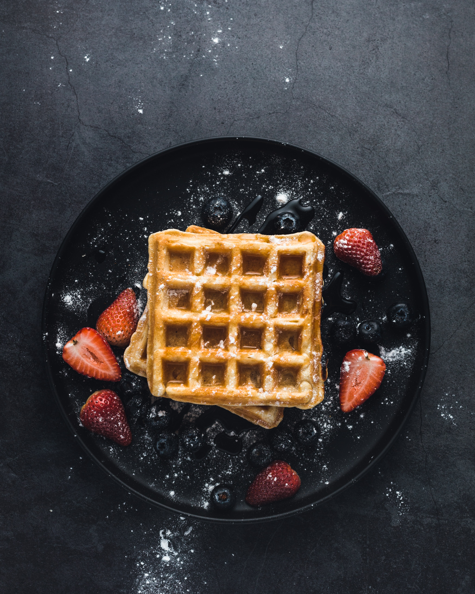

A waffle is a dish made from leavened batter or dough that is cooked between two plates that are patterned to give a characteristic size, shape, and surface impression. There are many variations based on the type of waffle iron and recipe used. Waffles are eaten throughout the world, particularly in Belgium, which has over a dozen regional varieties
Per Serving: 382 calories; protein 8.7g; carbohydrates 38g; fat 21.6g; cholesterol 67.7mg; sodium 390mg
Preheat waffle iron. Beat eggs in large bowl with hand beater until fluffy. Beat in flour, milk, vegetable oil, sugar, baking powder, salt and vanilla, just until smooth.
Spray preheated waffle iron with non-stick cooking spray. Pour mix onto hot waffle iron. Cook until golden brown. Serve hot.